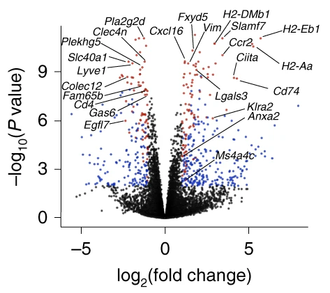
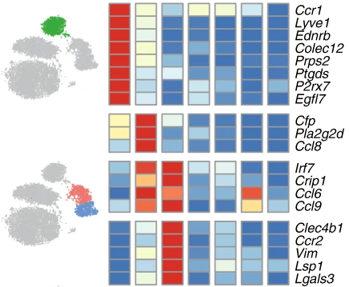

Comparing two populations:
easy

Comparing three populations:
a bit more difficult
Comparing many populations:
straightforward

My goals:
Analyse the transcriptome of
macrophages and dendritic cells
But...
How to do differential expression for 3 conditions?
So many module detection methods, which one should I use?
So many trajectory inference detection methods, which one should I use?